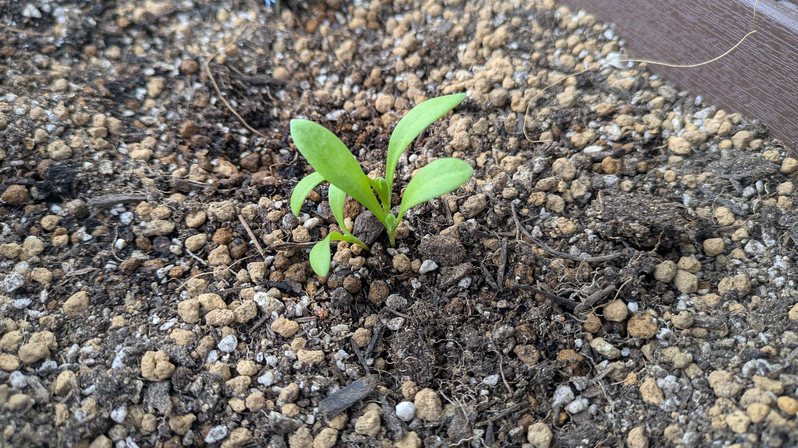
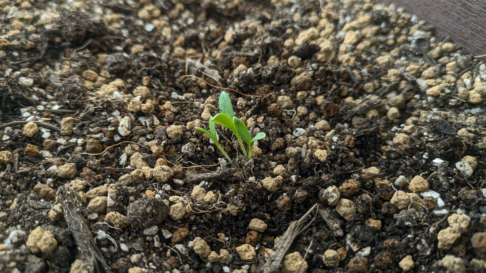
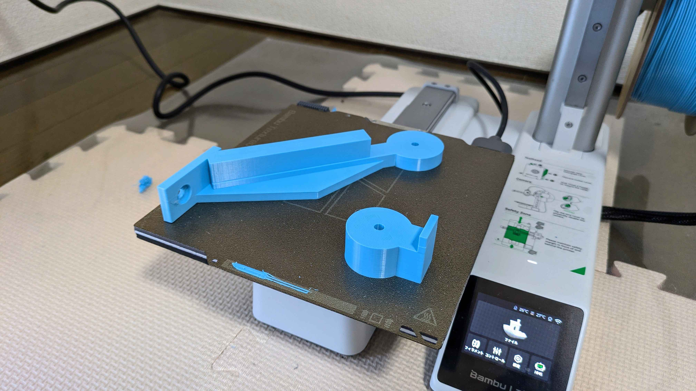
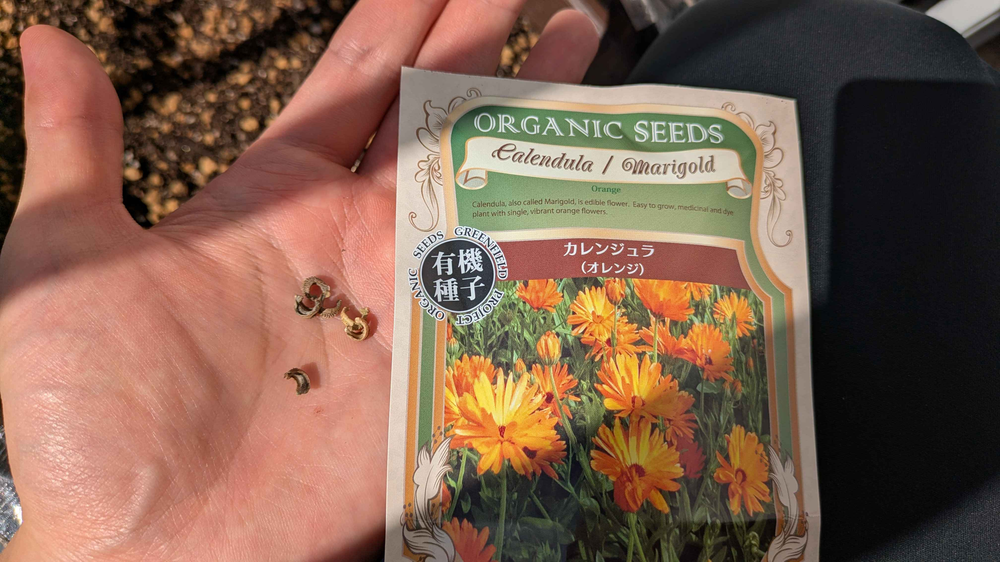
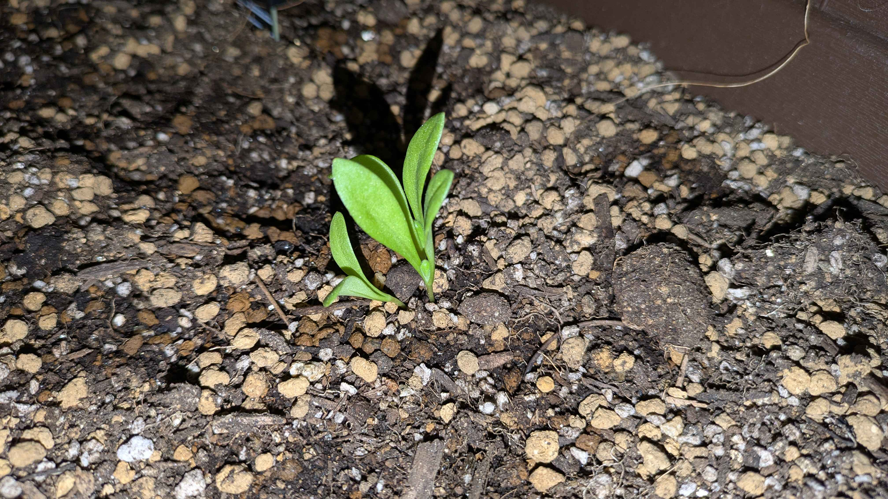
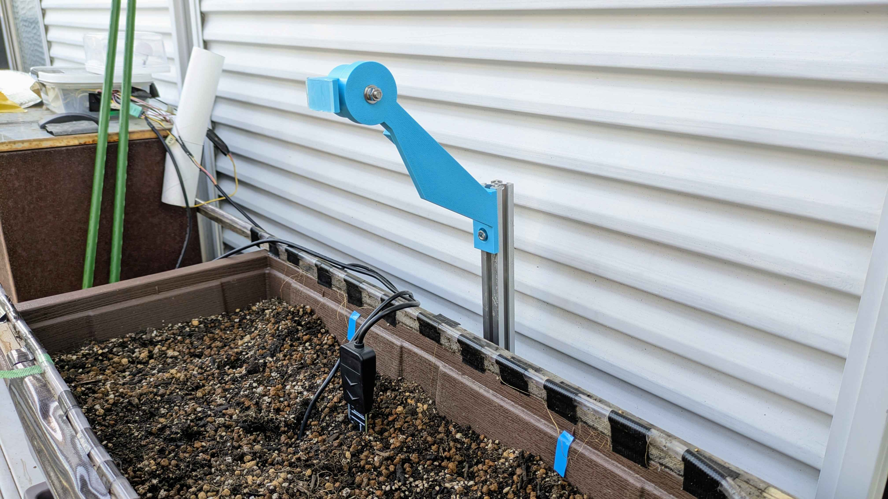
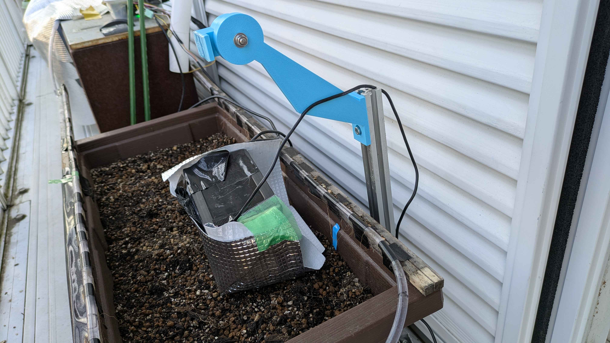

Observation
画像はまだありません。次回の観察写真をここに追加できます。
Experiment Record
秋から始めるカレンデュラ。種まきから芽、葉、花へ、写真とセンサーで日々の変化を追いかけます。
2026年10月10日、カレンデュラの種をまきました。前の栽培で使ったセンサーや散水設備も続投し、4回目のプランター実験が始まりました。
ここに残すのは、実際に見えた変化と、その日の作業です。写真、気温や土壌水分の記録を照らし合わせながら、クローラと一緒に観察ノートを続けていきます。
観察できなかった日は、欠測として残します。予定や予想を、実際に起きたこととして書くことはしません。
二十日大根と島オクラの記録も、実験一覧から引き続き読めます。過去の数値や写真は、新しいカレンデュラの観察とは分けて扱います。
Posts
画像はまだありません。次回の観察写真をここに追加できます。

画像はまだありません。次回の観察写真をここに追加できます。


Codex君に頼んだ3Dプリントのカメラ固定具。支柱には収まったのにカメラが落下。現場で分かった弱点をもとにモデルを直して作り直しました。
所属実験 第4回 カレンデュラ栽培実験

昨日まいたカレンデュラと前の栽培から引き継いだセンサーや散水装置。水の出方を調整しながら4回目のプランター実験が始まりました。
所属実験 第4回 カレンデュラ栽培実験
Gallery


